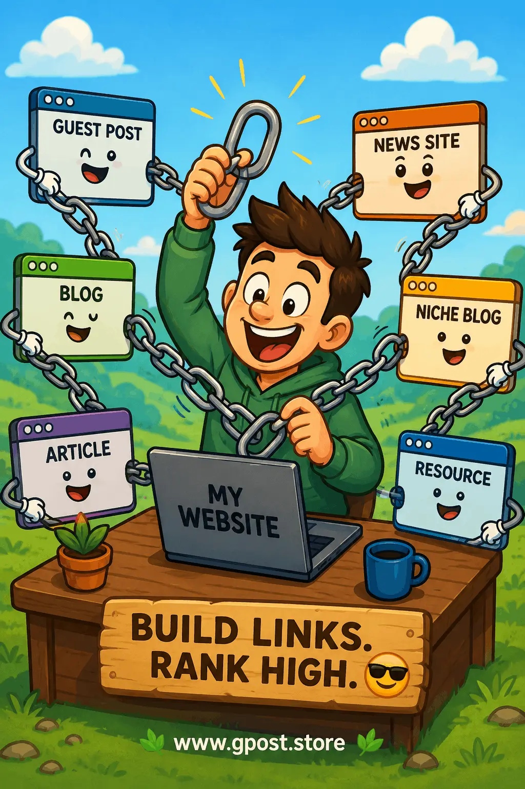

SEO backlink strategies for beginners – Complete Guide to Build High-Quality Backlinks in 2026
SEO backlink strategies for beginners is one of the most powerful starting points for anyone who wants to rank a website on Google and grow organic traffic in a sustainable way.
In simple terms, backlinks are trust signals from other websites. When a website links to yours, search engines interpret it as a vote of confidence. The more quality backlinks you have, the higher your chances of ranking on page one.
In this guide, you will learn practical, white-hat, and beginner-friendly methods that you can apply immediately without advanced SEO tools or technical knowledge.
Image Illustration

Step-by-step visual guide for building backlinks using white-hat SEO methods
What is SEO backlink strategies for beginners?
SEO backlink strategies for beginners refers to simple techniques used to acquire links from other websites to improve search engine rankings, domain authority, and organic visibility.
A backlink is created when one website links to another website. Google uses these links to measure credibility and relevance.
Simple definition:
SEO backlink strategies for beginners are structured methods to build high-quality backlinks that improve SEO performance and website authority.
- Guest posting on relevant blogs
- Creating valuable content that earns links
- Outreach to website owners
- Using directories and niche submissions
Why SEO backlink strategies for beginners matter
Understanding SEO backlink strategies for beginners is critical because backlinks directly impact how search engines rank your content.
Without backlinks, even high-quality content often fails to rank on competitive keywords.
- Increase domain authority
- Boost organic traffic
- Improve keyword rankings
- Help faster indexing
- Build online trust and credibility
AEO Answer: Backlinks are important because they signal trust to search engines, helping websites rank higher, gain authority, and increase organic traffic consistently.
Types of SEO backlink strategies for beginners
There are multiple approaches inside SEO backlink strategies for beginners depending on your budget and goals.
1. Free backlink strategies
- Blog commenting
- Forum engagement
- Social bookmarking
- Web 2.0 platforms
2. Paid backlink strategies
- Sponsored guest posts
- Niche edits
- Paid blog placements
3. Niche-based strategies
- Industry-specific guest posts
- Relevant blog outreach
- Authority websites collaboration
How to find opportunities for SEO backlink strategies for beginners
Finding the right websites is the foundation of SEO backlink strategies for beginners.
1. Google search operators
- “write for us + niche”
- “guest post guidelines + keyword”
- “submit article + niche”
2. Competitor analysis
Analyze competitor backlinks using SEO tools like Ahrefs or SEMrush to discover link sources.
3. Outreach strategy
- Send personalized emails
- Offer valuable content ideas
- Build long-term relationships
Step-by-step SEO backlink strategies for beginners
Here is a practical workflow for SEO backlink strategies for beginners that works in real-world SEO campaigns.
Step 1: Research
Find niche-relevant websites with high authority and real traffic.
Step 2: Outreach
Contact website owners with personalized and value-focused messages.
Step 3: Content creation
Create high-quality guest posts that solve real problems.
Step 4: Link placement
Insert contextual backlinks naturally inside content.
Step 5: Follow-up
Maintain communication for future link-building opportunities.
Learn more about advanced strategies in this guide:
SEO Backlink Strategy 2026 – What Actually Works (Guest Posting Case Study)
Common mistakes in SEO backlink strategies for beginners
Many beginners fail because they ignore white-hat SEO rules in SEO backlink strategies for beginners.
- Using spammy backlink sources
- Over-optimized anchor text
- Low-quality websites
- Buying irrelevant backlinks
- Ignoring niche relevance
These mistakes can lead to ranking drops or even Google penalties.
Pro tips for SEO backlink strategies for beginners
Advanced execution of SEO backlink strategies for beginners can significantly improve SEO performance.
- Use natural anchor text variations
- Focus on contextual backlinks
- Build internal links between pages
- Target niche-relevant websites only
Anchor text strategy
A mix of branded, partial match, and generic anchors helps maintain a natural backlink profile.
Internal linking
Strong internal linking improves crawlability and distributes authority across your website.
Blog posting sites for SEO backlinks
One of the most effective parts of SEO backlink strategies for beginners is using blog posting platforms.
- Medium
- WordPress.com
- Blogger
- Quora Spaces
You can also explore detailed methods here:
How to Create Backlinks Step by Step Free
These platforms help beginners build initial authority and generate referral traffic.
Is SEO backlink strategies for beginners still worth it in 2026?
Yes, SEO backlink strategies for beginners is still one of the most important ranking factors in 2026.
Google continues to rely on backlinks to evaluate trust, authority, and content quality. However, quality matters more than quantity.
When to avoid SEO backlink strategies for beginners
Not all situations require aggressive link building. Sometimes it should be avoided.
- New websites with no content
- Spammy or low-quality niche sites
- Over-optimized SEO campaigns
Focus on content first, then backlinks for best results.
FAQs about SEO backlink strategies for beginners
1. What are SEO backlink strategies for beginners?
They are simple methods used to build backlinks that improve website rankings and domain authority naturally.
2. Why are backlinks important for SEO?
Backlinks improve trust, authority, and visibility, helping websites rank higher in Google search results.
3. What is white hat link building?
White hat SEO link building methods focus on ethical backlink creation through content and outreach.
4. How do beginners get backlinks?
Beginners can use guest posting, blog comments, directories, and content marketing for backlinks.
5. What are blog posting sites for SEO backlinks?
Platforms like Medium and Blogger allow users to publish content and earn backlinks naturally.
6. Can backlinks increase traffic?
Yes, quality backlinks drive referral traffic and improve search engine visibility over time.
7. Are paid backlinks safe?
Paid backlinks can be risky if not from relevant and high-quality websites with proper disclosure.
8. What is the fastest backlink strategy?
Guest posting on high-authority niche websites is one of the fastest ethical methods.
9. Do backlinks still work in 2026?
Yes, backlinks remain a top ranking factor for Google when they are high quality and relevant.
10. How many backlinks do I need?
There is no fixed number; focus on quality, relevance, and authority instead of quantity.
Conclusion
SEO backlink strategies for beginners is a long-term SEO skill that every website owner must learn to compete in search rankings.
By focusing on white-hat methods, high-quality content, and proper outreach, you can build a strong backlink profile that drives consistent organic traffic.
Start small, stay consistent, and avoid spammy shortcuts. Over time, your authority and rankings will grow naturally.
For more guest posting insights, visit:
Guest Post Link Building